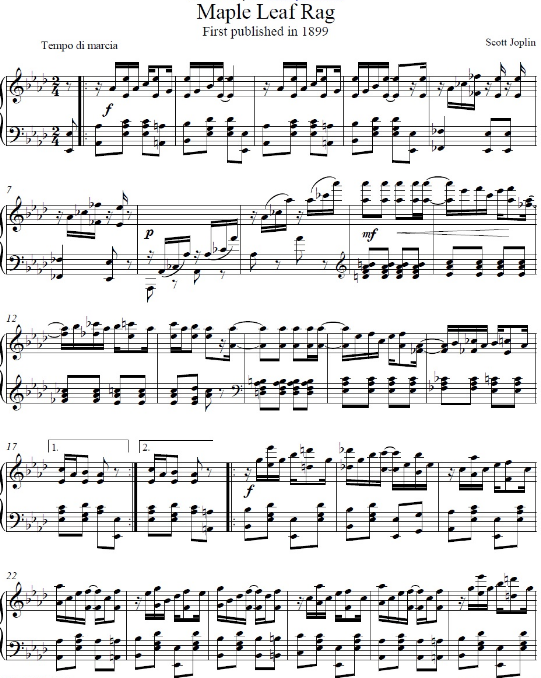
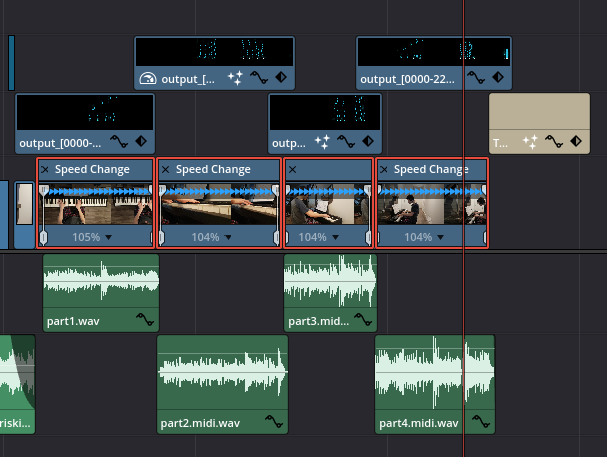
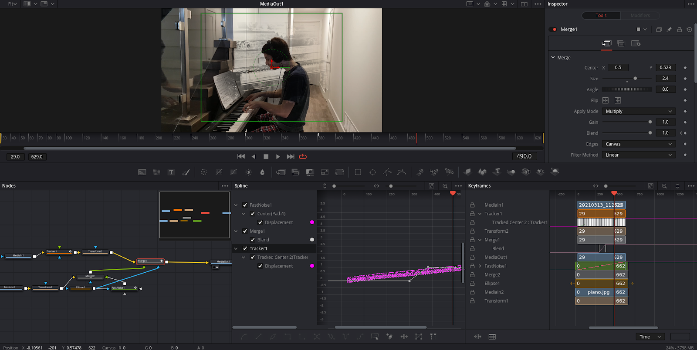
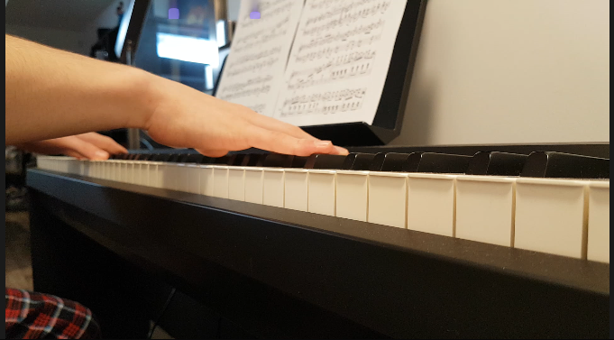
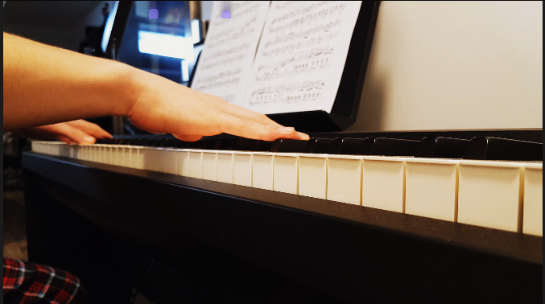

Movie Making
Here is my final movie, titled “Heart of the Keys”. The idea behind this project was to teach that piano must be played with lyric and heart. One way to do this is to understand the context of the song you are playing. For instance, the Maple Leaf Rag was written in the context of overcoming 1900s American racism and becoming the greatest ragtime composer despite this. Knowing this allows you to play with much more character and emotion. This is ubiquitous in music. Almost all classical music has a story to tell, from love stories like Symphonie Fantastique (which was written for an actress that Hector Berlioz loved) to a much darker story like The Rite of Spring (which caused a riot when it first premiered, and humiliation for Igor Stravinsky, the author).
I decided to play the Maple Leaf Rag because it is one of my favorite songs of all time, and has the aforementioned backstory. The notes falling down the screen were inspired by popular youtube videos that use a similar technique. I decided to put my own spin on it by using the notes on non-piano scenes as well. I like the way it turned out and I find it has a nice flow. Here is a photo of the sheet music:

I learned a lot from this project. One really interesting thing that I learned was that changing frame rates from my camera’s 29.97fps to the timeline’s more cinematic 24fps causes slight distortion in the timing. This took me a few hours to fix and was a big annoyance. The timing had to be perfect because the notes are falling at the exact times that I played them. Without good sync between the notes, the video and the audio, the entire effect breaks down. I also had to learn a new software for the notes visualization. I decided to use midivisualizer because it is free and open source, rather than Synthesia, a paid alternative. Here is a picture of syncing the clips:

At the end of the film, I decided to insert a “dream” looking clip of a 1900s ragtime piano. This was to illustrate that the main character is starting to feel the music. This effect was really hard to get right, and with more time, I would have tweaked it a lot more. I used a soft ellipse mask to have a kind of dream bubble over my head. I then generated noise to make it more dynamic. Here is a picture of the working Fusion project of the “dream”:

I am proud of the final quote that I put. I was going for an effect where the last two MIDI notes pull down the text. Another thing that I am really proud of is that I finally decided to do some structured learning on color grading and I made a custom color grade on my shots. Here is a before and after:


If I had more time, I would make the notes fade in and out according to the music.